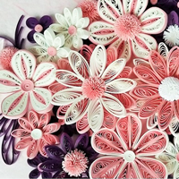
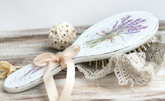
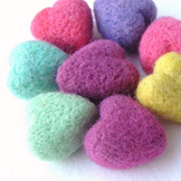
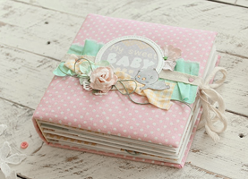
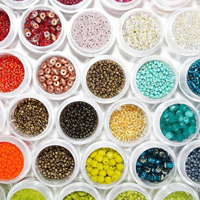
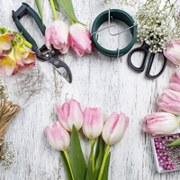

Обзор модных направлений handmade
Несмотря на то, что IKEA не перестает удивлять покупателей тысячами товаров для дома, многие предпочитают украшать свои жилища самодельными вещицами. И достигают в этом небывалых высот! Благо, сегодня существуют десятки, если не сотни, различных направлений handmade – хобби для умельцев и рукодельниц. Подходящее занятие найдется и для мужчин, и для женщин – было бы желание. Рассказываем о самых популярных разновидностях этого домашнего искусства.
Квиллинг

На русский язык это переводится как ″бумагокручение″, то есть создание плоских и объемных композиций из полосок тонкой бумаги. Длинные и узкие полоски скручивают в спирали, которым потом придается определенная форма, например, ромб. Из спиралек разных цветов и размеров составляют рисунок.
В технике квиллинга можно оформить рамку для фотографий или целую картину. Квиллинг опровергает привычное представление о хрупкости изделий из бумаги. Скрученные спиральки довольно плотные, и объемные вещицы, например, шкатулки или вазы-конфетницы могут быть вполне функциональными.
Декупаж
 Даже если вы прежде не знали, что такое декупаж, тем не менее работы, выполненные в этой технике, встречали наверняка. Просто не догадывались, что изящно расписанные рамки для фотографий, декоративные фигурки или мебель украшены салфеточной росписью. Суть декупажа заключается в декорировании готовыми рисунками различных предметов – от мелких аксессуаров до мебели. Благодаря тому, что бумага выбирается очень тонкая, а рисунок покрывается лаком, создается впечатление оригинальной художественной росписи.
Фелтинг

За непонятным названием кроется занятие с тысячелетней историей: валяние из шерсти. Русские валенки пришли к нам как раз оттуда, из глубины веков. Только в наши дни из шерсти валяют не только обувь, но и массу других предметов.
В основе техники фелтинга лежит способность натуральной шерсти сваливаться и становиться войлоком. Бывает два способа валяния – мокрое и сухое. При мокром валянии получаются плоские изделия, например, гобелены, ковры и декоративные наволочки на подушки.
Сухое валяние позволяет получить объемные формы, например, декоративные вазы или салфетницы. Вообще фелтинг – занятие чрезвычайно приятное и умиротворяющее. Войлок – очень послушный материал, работать с ним не сложно. Рекомендуется беременным женщинам и детям. Заодно и детскую комнату украсите симпатичными и безопасными вещичками!
Купить материал можно в любом швейном магазине или даже на сельхозрынке. Конечно, самая лучшая шерсть — это золотое руно. Но его еще в древние века выкрал из Колхиды один герой по имени Ясон…
Скрапбукинг

Так называют технику оформления домашних фотоальбомов. Она создана специально для тех, кто любит делать красивые вещи своими руками и слишком сентиментален для того, чтобы хранить фотографии только в компьютере. Такие альбомы всегда посвящены определенной теме, например, свадьбе, путешествию, рождению ребенка.
Самое забавное, что фотографии в таких альбомах – не главное. Важнее оформление и сопутствующие детали – записи, наклейки, вырезки из газет, билеты из памятной поездки, первые рисунки детей и многое другое. Пуговицы, ленты и стразы делают скрапбукинг окончательно «девчачьим» занятием.
Бисероплетение
 Человечество знакомо с бисероплетением с древних времен. В последнее время этот вид рукоделия занял определенное место в современной моде. Богатейшая цветовая гамма чешского бисера, неограниченные возможности моделирования изделий из бусинок, большой ассортимент различных украшений могут осуществить любую мечту самой капризной модницы. Колье и серьги, пояски и брошки, шапочки и браслеты, заколки и сумочки в сочетании с натуральными камнями, жемчугом и янтарем придают внешнему виду оригинальность и неповторимость.
Флористика
 Под флористикой понимают искусство составления букетов. Это один из видов дизайна, результатом которого являются цветочные букеты, панно или коллажи. Такая работа имеет как техническую, так и творческую сторону. Целью же флористики выступает оформление какого-либо праздника или события, выражение их темы или идеи за счет природных композиций из цветов и листьев. Начинающим дизайнерам в этой области стоит обратить внимание на несложные коллажи или букеты. В результате такое хобби может стать настоящей профессией.